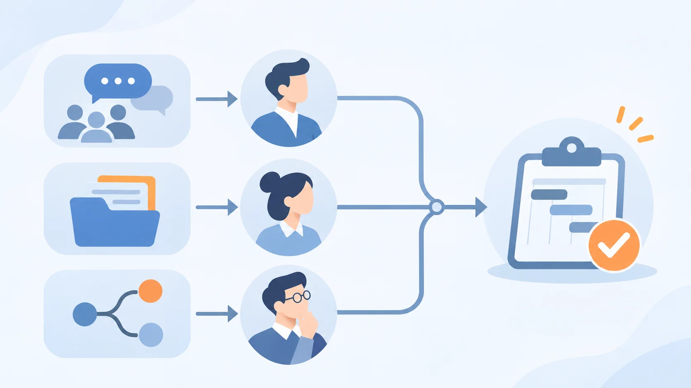

Article · 飞函
项目负责人更换后，谁接管群组、资料和未决事项
项目负责人离岗前，在群里说了一句“后续由新负责人跟进”。几周后，团队仍可能碰到三个问题：谁负责回应群里的待办？共享资料该由谁维护？上次会议提出、尚未拍板的方案，下一步由谁决定？
这类交接的难点，不是把聊天记录和文件复制一份，而是让责任、资料权限和决定的来龙去脉一起延续。只交文件，新负责人可能看不到讨论背景；只留在群里，关键材料可能仍由原负责人个人维护；只口头说明待办，团队又容易把“正在讨论”误当成“已经批准”。
先明确接管人，再逐项交接
交接可以从一张简短清单开始，由原负责人、新负责人和项目主管共同核对：
| 交接对象 | 需要确认的问题 | 建议留下的结果 |
|---|---|---|
| 项目群组 | 谁负责后续答复、召集讨论和提醒待办？ | 在群内公布接管人及生效时间 |
| 共享资料 | 哪些文件仍在使用，谁可以查看、编辑和维护？ | 整理资料目录并复核共享权限 |
| 未决事项 | 哪些方案尚未批准，谁有权决定，何时再议？ | 记录事项、当前状态、责任人和下一步时间 |
这张清单还应写明交接完成的标准：新负责人能找到必要资料，团队知道向谁提问，每项未决事项都有明确的下一步。原负责人退出项目后的权限调整，也应纳入同一次核对。

群里保留脉络，资料按职责交付
群组适合承接日常讨论，但一条“已交接”的消息不能替代逐项确认。交接时，可以请原负责人汇总关键讨论和待办，在群内由新负责人确认；项目主管再明确哪些事项需要升级决定。这样，团队遇到旧问题时，既能回看背景，也知道现在由谁处理。
飞函的即时通讯提供历史消息同步、全局搜索和重要消息等能力，可帮助接管人查找既有讨论。共享资料则适合集中放入网盘共享空间，按成员或部门分配共享权限。团队仍需指定资料维护人，检查文件版本和访问范围，并在人员变动后复核权限；工具能够保存和呈现信息，接管责任需要组织明确。
把“还没决定”单独交出去
最容易遗漏的是没有结论的事项。例如，供应商方案还在比较，预算尚待确认，测试发现的问题需要决定是否影响上线。交接记录应区分“已决定”“待确认”和“暂停”，为每项未决事项写下已有依据、待补信息、决定人及预计复议时间。新负责人在接管后的首次项目讨论中逐项确认，再把结果同步给相关成员。
当群组有人承接、资料有人维护、未决事项有人推动，负责人更换才不会让项目回到起点。交接完成与否，也有了可检查的依据，而不只是一句“资料已经发给你了”。